승강기기능사 (2015-10-10 기출문제)
1과목: 승강기개론
1. 조속기의 설명에 관한 사항으로 틀린 것은?
- 조속기로프의 공칭 직경은 8mm 이상이어야 한다.
- 조속기는 조속기 용도로 설계된 와이어로프에 의해 구동되어야 한다.
- 조속기에는 비상정지장치의 작동과 일치하는 회전방향이 표시되어야 한다.
- 조속기로프 풀리의 피치 직경과 조속기로프의 공칭 직경 사이의 비는 30 이상이어야 한다.
(정답률: 66%)

2. 전기식 엘리베이터 기계실의 구조에서 구동기의 회전부품 위로 몇 m 이상의 유효수직거리가 있어야 하는가?
- 0.2
- 0.3
- 0.4
- 0.5
(정답률: 52%)
3. 균형추의 중량을 결정하는 계산식은? (단, 여기서 L은 정격하중, F는 오버밸런스율이다.)
- 균형추의 중량 = 카 자체하중 + (L * F)
- 균형추의 중량 = 카 자체하중 × (L * F)
- 균형추의 중량 = 카 자체하중 + (L + F)
- 균형추의 중량 = 카 자체하중 + (L - F)
(정답률: 80%)
4. 승강기가 최하층을 통과했을 때 주전원을 차단시켜 승강기를 정지시키는 것은?
- 완충기
- 조속기
- 비상정지장치
- 파이널 리미트 스위치
(정답률: 84%)
5. 엘리베이터의 정격속도 계산 시 무관한 항목은?
- 감속비
- 편향도르래
- 전동기 회전수
- 권상도르래 직경
(정답률: 63%)
6. 엘리베이터용 도어머신에 요구되는 성능이 아닌 것은?
- 가격이 저렴할 것
- 보수가 용이할 것
- 작동이 원활하고 정숙할 것
- 기동회수가 많으므로 대형일 것
(정답률: 79%)
7. 여러 층으로 배치되어 있는 고정된 주차구획에 아래·위로 이동할 수 있는 운반기에 의하여 자동차를 자동으로 운반 이동하여 주차하도록 설계한 주차장치는?
- 2단식
- 승강기식
- 수직순환식
- 승강기슬라이드식
(정답률: 62%)
8. 다음 중 도어 시스템의 종류가 아닌 것은?
- 2짝문 상하열기방식
- 2짝문 가로열기(2S)방식
- 2짝문 중앙열기(CO)방식
- 가로열기와 상하열기 겸용방식
(정답률: 80%)
9. 전기식 엘리베이터의 속도에 의한 분류방식 중 고속엘리베이터의 기준은?
- 2 m/s 이상
- 2 m/s 초과
- 3 m/s 이상
- 4 m/s 초과
(정답률: 71%)
10. 에스컬레이터의 구동체인이 규정치 이상으로 늘어났을 때 일어나는 현상은?
- 안전레버가 작동하여 브레이크가 작동하지 않는다.
- 안전레버가 작동하여 하강은 되나 상승은 되지 않는다.
- 안전레버가 작동하여 안전회로 차단으로 구동되지 않는다.
- 안전레버가 작동하여 무부하시는 구동되나 부하시는 구동되지 않는다.
(정답률: 62%)
11. 승강기 정밀안전 검사 시 과부하방지장치의 작동치는 정격 적재하중의 몇 %를 권장치로 하는가?
- 95~100
- 1⑤~110
- 115~120
- 125~130
(정답률: 70%)
12. 사이리스터의 점호각을 바꿈으로써 회전수를 제어하는 것은?(문제 오류로 실제 시험장에서는 1, 4번이 정답 처리 되었습니다. 여기서는 4번을 누르면 정답 처리 됩니다. 자세한 내용은 해설을 참고하세요.)
- 궤환제어
- 일단속도제어
- 주파수변환제어
- 정지레오나드제어
(정답률: 81%)
13. 와이어로프 가공방법 중 효과가 가장 우수한 것은?
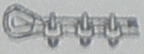
(정답률: 71%)
14. 실린더에 이물질이 흡입되는 것을 방지하기 위하여 펌프의 흡입축에 부착하는 것은?
- 필터
- 싸이렌서
- 스트레이너
- 더스트와이퍼
(정답률: 55%)
15. 직류 가변전압식 엘리베이터에서는 권상전동기에 직류 전원을 공급한다. 필요한 발전기용량은 약 몇 kW 인가? (단, 권상전동기의 효율은 80%, 1시간 정격은 연속정격의 56%, 엘리베이터용 전동기의 출력은 20kW이다.)
- 11
- 14
- 17
- 20
(정답률: 54%)
2과목: 안전관리
16. 교류엘리베이터의 제어방식이 아닌 것은?
- 교류일단 속도제어방식
- 교류귀환 전압제어방식
- 워드레오나드방식
- VVVF 제어방식
(정답률: 72%)
17. 카 비상정지장치의 작동을 위한 조속기는 정격속도의 몇 % 이상의 속도에서 작동해야 하는가?
- 1⑤
- 110
- 115
- 120
(정답률: 57%)
18. 간접식 유압엘리베이터의 특징으로 틀린 것은?
- 실린더의 점검이 용이하다.
- 비상정지장치가 필요하지 않다.
- 실린더를 설치하기 위한 보호관이 필요하지 않다.
- 승강로는 실린더를 수용할 부분만큼 더 커지게 된다.
(정답률: 73%)
19. 전기기기의 외함 등이 절연이 나빠져서 전류가 누설되어도 감전사고의 위험이 적도록 하기위하여 어떤 조치를 하여야 하는가?
- 접지를 한다.
- 도금을 한다.
- 퓨즈를 설치한다.
- 영상변류기를 설치한다.
(정답률: 77%)
20. 재해 누발자의 유형이 아닌 것은?
- 미숙성 누발자
- 상황성 누발자
- 습관성 누발자
- 자발성 누발자
(정답률: 73%)
21. 카 내에 갇힌 사람이 외부와 연락할 수 있는 장치는?
- 챠임벨
- 인터폰
- 리미트스위치
- 위치표시램프
(정답률: 91%)
22. 추락에 의한 위험방지 중 유의사항으로 틀린 것은?
- 승강로 내 작업시에는 작업공구, 부품 등이 낙하하여 다른 사람을 해하지 않도록 할 것
- 카 상부 작업 시 중간층에는 균형추의 움직임에 주의하여 충돌하지 않도록 할 것
- 카 상부 작업 시에는 신체가 카상부 보호대를 넘지 않도록 하며 로프를 잡을 것
- 승강장 도어 키를 사용하여 도어를 개방할 때에는 몸의 중심을 뒤에 두고 개방하여 반드시 카 유무를 확인하고 탑승할 것
(정답률: 61%)
23. 안전보호기구의 점검, 관리 및 사용방법으로 틀린 것은?
- 청결하고 습기가 없는 장소에 보관한다.
- 한번 사용한 것은 재사용을 하지 않도록 한다.
- 보호구는 항상 세척하고 완전히 건조시켜 보관한다.
- 적어도 한달에 1회 이상 책임있는 감독자가 점검한다.
(정답률: 83%)
24. 작업장에서 작업복을 착용하는 가장 큰 이유는?
- 방한
- 복장 통일
- 작업능률 향상
- 작업 중 위험 감소
(정답률: 86%)
25. 재해원인 중 생리적인 원인은?
- 작업자의 피로
- 작업자의 무지
- 안전장치의 고장
- 안전장치 사용의 미숙
(정답률: 84%)
26. 기계운전 시 기본안전수칙이 아닌 것은?
- 작업범위 이외의 기계는 허가 없이 사용한다.
- 방호장치는 유효 적절히 사용하며, 허가 없이 무단으로 떼어놓지 않는다.
- 기계가 고장이 났을 때에는 정지, 고장표시를 반드시 기계에 부착한다.
- 공동 작업을 할 경우 시동할 때에는 남에게 위험이 없도록 확실한 신호를 보내고 스위치를 넣는다.
(정답률: 87%)
27. 승강기 보수 작업 시 승강기의 카와 건물의 벽사이에 작업자가 끼인 재해의 발생 형태에 의한 분류는?
- 협착
- 전도
- 방심
- 접촉
(정답률: 81%)
28. 감전 상태에 있는 사람을 구출할 때의 행위로 틀린 것은?
- 즉시 잡아 당긴다.
- 전원 스위치를 내린다.
- 절연물을 이용하여 떼어 낸다.
- 변전실에 연락하여 전원을 끈다.
(정답률: 84%)
29. 운행 중인 에스컬레이터가 어떤 요인에 의해 갑자기 정지하였다. 점검해야 할 에스컬레이터 안전장치로 틀린 것은?
- 승객검출장치
- 인레트 스위치
- 스커드 가드 안전 스위치
- 스텝체인 안전장치
(정답률: 63%)
30. 승강기 완성검사 시 에스컬레이터의 공칭속도가 0.5m/s인 경우 제동기의 정지거리는 몇 m 이어야 하는가?
- 0.20m에서 1.00m사이
- 0.30m에서 1.30m사이
- 0.40m에서 1.50m사이
- 0.55m에서 1.70m사이
(정답률: 62%)
3과목: 승강기보수
31. 로프식 승용승강기에 대한 사항 중 틀린 것은?(관련 규정 개정전 문제로 여기서는 기존 정답인 3번을 누르면 정답 처리됩니다. 자세한 내용은 해설을 참고하세요.)
- 카 내에는 외부와 연락되는 통화장치가 있어야 한다.
- 카 내에는 용도, 적재하중(최대 정원) 및 비상시 조치 내용의 표찰이 있어야 한다.
- 카바닥 끝단과 승강로 벽사이의 거리는 150mm 초과 하여야 한다.
- 카바닥은 수평이 유지되어야 한다.
(정답률: 86%)
32. 버니어캘리퍼스를 사용하여 와이어 로프의 직경 측정방법으로 알맞은 것은?
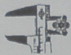
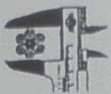
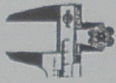
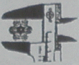
(정답률: 79%)
33. 전기식엘리베이터 자체점검 항목 중 피트에서 완충기점검 항목 중 B로 하여야 할 것은?
- 완충기의 부착이 불확실한 것
- 스프링식에서는 스프링이 손상되어 있는 것
- 전기안전장치가 불량한 것
- 유압식으로 유량부족의 것
(정답률: 41%)
34. 조속기 로프의 공칭 지름(mm)은 얼마 이상이어야 하는가?
- 6
- 8
- 10
- 12
(정답률: 61%)
35. 가이드 레일의 규격(호칭)에 해당되지 않는 것은?
- 8K
- 13K
- 15K
- 18K
(정답률: 83%)
36. 승강기 완성검사 시 전기식엘리베이터에서 기계실의 조도는 기기가 배치된 바닥면에서 몇 lx이상인가?
- 50
- 100
- 150
- 200
(정답률: 80%)
37. 유압식 엘리베이터의 제어방식에서 펌프의 회전수를 소정의 상승속도에 상당하는 회전수로 제어하는 방식은?
- 가변전압가변주파수 제어
- 미터인회로 제어
- 블리드오프회로 제어
- 유량밸브 제어
(정답률: 40%)
38. 베어링(bearing)에 가압력을 주어 축에 삽입할 때 가장 올바른 방법은?
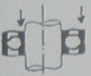
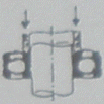
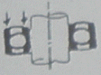
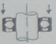
(정답률: 70%)
39. 도어 시스템(열리는 방향)에서 S 로 표현되는 것은?(오류 신고가 접수된 문제입니다. 반드시 정답과 해설을 확인하시기 바랍니다.)
- 중앙열기 문
- 가로열기 문
- 외짝 문 상하열기
- 2짝 문 상하열기
(정답률: 71%)
40. 다음 중 카 상부에서 하는 검사가 아닌 것은?
- 비상구출구 스위치의 작동상태
- 도어개폐장치의 설치상태
- 조속기로프의 설치상태
- 조속기로프 인장장치의 작동상태
(정답률: 39%)
41. 디스크형 조속기의 점검방법으로 틀린 것은?
- 로프잡이의 움직임은 원활하며 지점부에 발청이 없으며 급유상태가 양호한지 확인한다.
- 레버의 올바른 위치에 설정되어 있는지 확인한다.
- 플라이 볼을 손으로 열어서 각 연결 레버의 움직임에 이상이 없는지 확인한다.
- 시브홈의 마모를 확인한다.
(정답률: 64%)
42. 감속기의 기어 치수가 제대로 맞지 않을 때 일어나는 현상이 아닌 것은?
- 기어의 강도에 악 영향을 준다.
- 진동 발생의 주요 원인이 된다.
- 카가 전도할 우려가 있다.
- 로프의 마모가 현저히 크다.
(정답률: 49%)
43. 전기식 엘리베이터 자체점검 중 피트에서 하는 점검항목에서 과부하 감지장치에 대한 점검 주기(회/월)는?
- 1/1
- 1/3
- 1/4
- 1/6
(정답률: 60%)
44. 도르래의 로프홈에 언더커트(Under Cut)를 하는 목적은?
- 로프의 중심 균형
- 윤활 용이
- 마찰계수 향상
- 도르래의 경량화
(정답률: 63%)
45. 비상용 엘리베이터의 운행속도는 몇 m/min 이상으로 하여야 하는가?
- 30
- 45
- 60
- 90
(정답률: 64%)
4과목: 기계,전기기초이론
46. 에스컬레이터의 스텝 폭이 1m이고 공칭속도가 0.5m/s인 경우 수송능력(명/h)은?
- 5000
- 5500
- 6000
- 6500
(정답률: 58%)
47. 유도전동기의 속도제어법이 아닌 것은?
- 2차 여자제어법
- 1차 계자제어법
- 2차 저항제어법
- 1차 주파수제어법
(정답률: 43%)
48. 그림과 같이 자기장 안에서 도선에 전류가 흐를 때, 도선에 작용하는 힘의 방향은? (단, 전선가운데 점 표시는 전류의 방향을 나타낸다.)
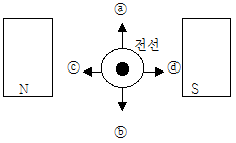
- ⓐ방향
- ⓑ방향
- ⓒ방향
- ⓓ방향
(정답률: 63%)
49. 6극, 50Hz의 3상 유도전동기의 동기속도(rpm)는?
- 500
- 1000
- 1200
- 1800
(정답률: 47%)
50. 다음 중 역률이 가장 좋은 단상 유도전동기로서 널리 사용되는 것은?
- 분상기동형
- 반발기동형
- 콘덴서기동형
- 셰이딩코일형
(정답률: 66%)
51. Q(C)의 전하에서 나오는 전기력선의 총수는?
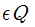
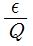
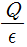
(정답률: 64%)
52. 그림에서 지름 400mm의 바퀴가 원주방향으로 25kg의 힘을 받아 200rpm으로 회전하고 있다면, 이때 전달되는 동력은 몇 kg·m/sec 인가? (단, 마찰계수는 무시한다.)
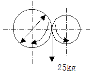
- 10.47
- 78.5
- 104.7
- 785
(정답률: 45%)
53. 다음 중 다이오드의 순방향 바이어스 상태를 의미하는 것은?
- P형 쪽에 (-), N형 쪽에 (+) 전압을 연결한 상태
- P형 쪽에 (+), N형 쪽에 (-) 전압을 연결한 상태
- P형 쪽에 (-), N형 쪽에 (-) 전압을 연결한 상태
- P형 쪽에 (+), N형 쪽에 (+) 전압을 연결한 상태
(정답률: 73%)
54. 요소와 측정하는 측정기구의 연결로 틀린 것은?
- 길이 : 버니어캘리퍼스
- 전압 : 볼트미터
- 전류 : 암미터
- 접지저항 : 메거
(정답률: 61%)
55. 교류 회로에서 전압과 전류의 위상이 동상인 회로는?
- 저항만의 조합회로
- 저항과 콘덴서의 조합회로
- 저항과 코일의 조합회로
- 콘덴서와 콘덴서만의 조합회로
(정답률: 41%)
56. 아래의 회로도와 같은 논리기호는?
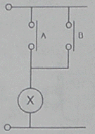
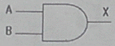
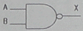
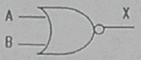
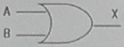
(정답률: 56%)
57. 구름베어링의 특징에 관한 설명으로 틀린 것은?
- 고속회전이 가능하다
- 마찰저항이 작다.
- 설치가 까다롭다.
- 충격에 강하다.
(정답률: 52%)
58. 전선의 길이를 고르게 2배로 늘리면 단면적은 1/2로 된다. 이때의 저항은 처음의 몇 배가 되는가?
- 4배
- 3배
- 2배
- 1.5배
(정답률: 68%)
59. 응력(stress)의 단위는?
- kcal/h
- %
- kg/cm2
- kg·cm
(정답률: 69%)
60. 동력을 수시로 이어주거나 끊어주는 데 사용할 수 있는 기계요소는?
- 클러치
- 리벳
- 키이
- 체인
(정답률: 71%)